Photo Gallery
World Shrine for all humankind – Takayama, Japan
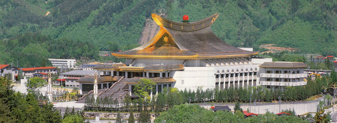
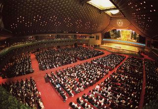
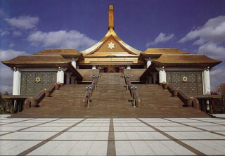
Shrine for Sukuinushisama – near Takayama, Japan
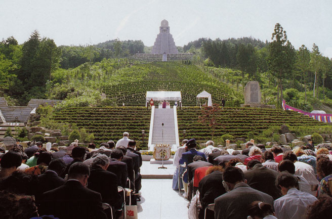
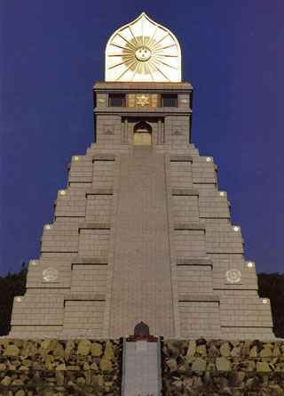
Hikaru Museum – Takayama, Japan
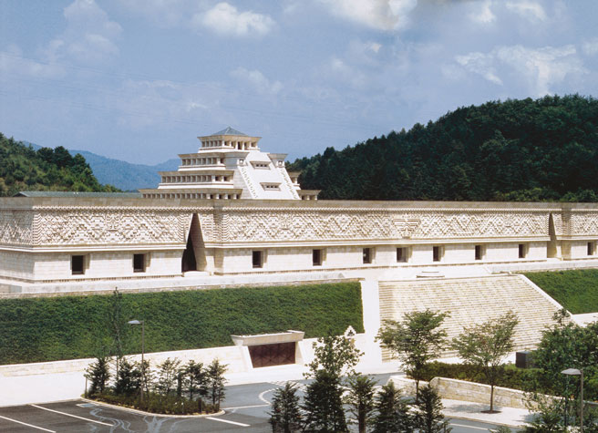
Yoko Health Centre – Takayama, Japan
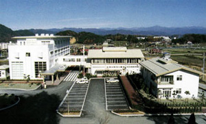
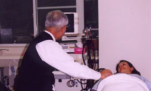
Youth Activities – Australia-Oceania Region
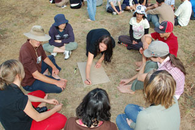
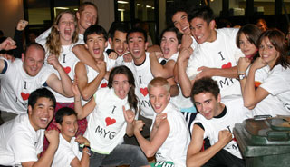
Community Activities – Australia-Oceania Region
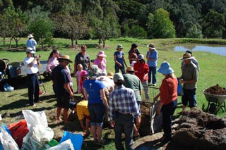
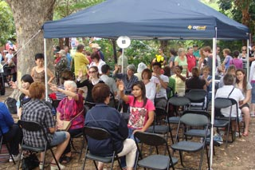
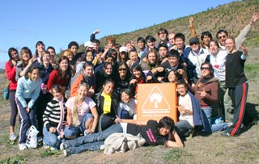
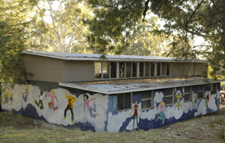
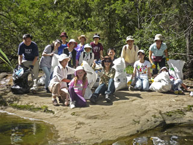
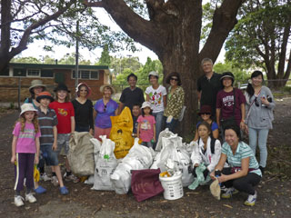